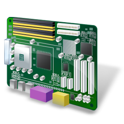

也紀念我們永遠的朋友 李士傑先生（Shih-Chieh Ilya Li）。
What is Resource Catalog ?
Embedded System
Embedded system is a computer system designed to perform one or a few dedicated functions often with real-time computing constraints. It is embedded as part of a complete device often including hardware and mechanical parts. By contrast, a general-purpose computer, such as a personal computer (PC), is designed to be flexible and to meet a wide range of end-user needs. Embedded systems control many devices in common use today.
- General Information (10)
- Organizations (4)
- Research Groups in Taiwan (10)
- Taiwan Companies (25)
- Embedded OS (32)
- Middleware (17)
- Drivers (5)
- Development Tools (41)
- Automotive (60)
- Medical (15)
- Cell Phone and Handhelds Device (18)
- Wireless Communication (18)
- Robotics (26)
- Smart Appliance (13)
- Standard and protocol (2)
Results 1 - 3 of 3
OpenCores Featured
OpenCores 提供一個讓開發者自由討論創作 Open Hardware 的組織，專注於處理器晶片及其智慧財產的設計，由於現今晶片設計過於繁雜，影響了整體開發進度，導致過多的時間成本的浪費，此外，大部份晶片受專利保護，需要和供應商購買，且往往費用較高；OpenCores 的目標，就是提供開放、可重覆使用的 Open Hardware 設計，並以自由軟體授權如 LGPL 條款釋出。
BeagleBone Featured
BeagleBone，是 BeagleBoard 在 2011年10月推出的小型開放硬體開發板，是 BeagleBoard 的最新成員，其裝置相當小，但它包含高效能的的微處理器、可開發各種裝置連接的擴充連接埠、有線乙太網路、MicroSD、USB 等，能更容易的實現各種創新，如無線自動機器人、自學電子教育套件、智能電子看板、家庭自動化等。BeagleBoard 推出後，淡化了桌上型電腦與嵌入式裝置運算能力的界限，加快了開放硬體的創新腳步，而身為 BeagleBoard 縮小版的 BeagleBone，則為嵌入式裝置及互動裝置的開發帶來新的力量。
Arduino Featured
Arduino 是自由開源軟體專案、同時也是一個開放硬體(Open Hardware)的專案，其建置基礎以一塊Simple i/o介面版為主軸，並延伸拓展了該介面版的應用環境，建立一個由使用者、開發者、廠商三者構成的擴充生態。該專案主體的程式碼以 GPL-2.0 釋出，相關的函式庫則以較寬鬆的LGPL-2.1釋出。Arduino可以讓使用者連接容易購得的電子元件，例如開關、感測器、LED、步進馬達或其他輸出入裝置，也能與其他軟體溝通，例如Adobe Flash、Processing、Max/MSP、Pure Data、VVVV 等，是一個讓人簡易上手、就近取材之後彈性配置，就能開發出具實作功能與驚豔效果的嵌入式互動裝置。
Address：No.128, Sec.2, Academia Rd., Institute of Information Science, Academia Sinica, Nangang District, Taipei City 11529, Taiwan (R.O.C).
Privacy Policy. Terms-of-use